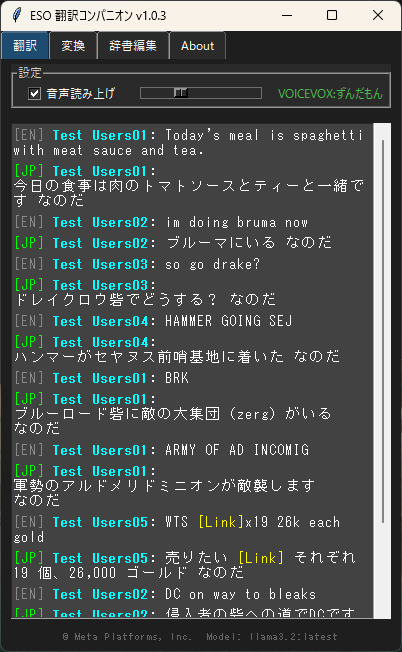
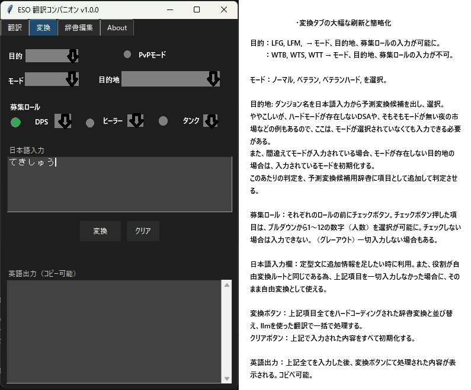
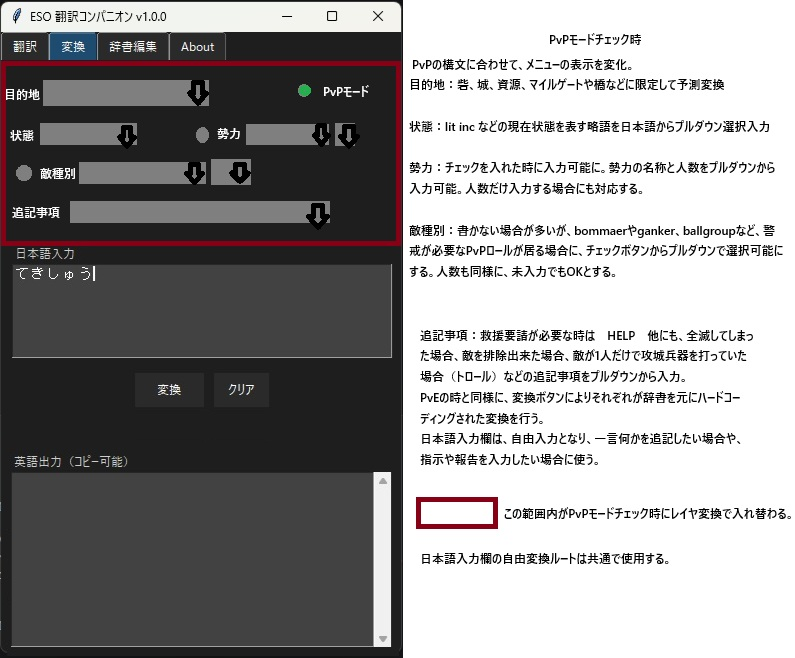

言葉の壁を越えて、
タムリエルの冒険へ。
海外サーバーでのチャット、もう怖くない。
ESO特有のスラング・略語をローカルAIでリアルタイム高精度翻訳。
ゲームの通信やフレームレートを妨げにくい設計の、軽量コンパニオンアプリ。
本アプリは現在、ゲーム内のスラングやチャットログから例文・辞書データを抽出・収集しているテスト運用段階（開発・準備中）です。動作検証およびテストプレイヤー様向けに先行配布を行っております。



主な特徴
MMORPGを心ゆくまで楽しむために設計された、妥協のないこだわり
ESO特有のスラング・略語に対応
「LFG」「WTB」「vet」「aggro」など、MMO特有の崩れた文法や省略語句を網羅した専用辞書を内蔵。DeepLやGoogle翻訳では崩れがちなチャットも、文脈を汲み取って的確に日本語化します。
ローカルAI駆動＆下準備全自動
外部の有料API契約は一切不要。PC内のAI（Ollama）を使用するため完全無料で使い放題です。面倒なモデルダウンロードや初期設定は、アプリが自動で全て完了してくれます。
※ 万が一、インストールするドライブが違ってもアプリが自動で探します。Aboutタブでフォルダパスを手動で指定する事も出来ます。
ゲームを重くしにくい軽量設計
ESOプレイ中のVRAMやGPUへの負荷を抑えるため、軽量ローカルLLMと「経験値キャッシュシステム」を採用。反復する定型チャットは瞬時に翻訳し、ゲームへの影響を最小限に抑えます。
⚠️ 動作環境のご注意: グラフィックメモリ（VRAM）は最低6GB、快適なプレイには8GB以上を推奨します。また物理メモリ（RAM）が少ない環境ではゲームの挙動に影響が出る場合があります。
※ 軽量モデルを採用している仕様上、一般的な大規模モデルに比べてハルシネーション（不自然な翻訳や創作）が発生しやすい傾向があります。原文と照らし合わせながらご活用ください。
自由自在な辞書編集 ＆ 上書き機能
自分だけの用語集をアプリ内でいつでも編集可能。「語句のおおざっぱな説明」を入力しておくと、AIが文脈を汲み取って翻訳精度が向上します。
さらに、既存の内部辞書を上書きすることも可能。「ニュアンスがちょっと違うな？」と感じた単語も自分好みの訳へ自由に変更できます。
双方向の日英翻訳
相手の英語ログを日本語にするだけでなく、自分が送りたい日本語チャットをすばやく英語に変換してコピーできる入力フォームも備えています。海外グループへの参加もスムーズです。
※ 正直なところ、ESOの略語を含まない通常の文章の場合ならDeepL翻訳のほうが遥かに精度が高いです。本機能は「ゲーム中に画面を切り替えず、すばやくやり取りするための補助ツール」としてご活用ください。
スマート音声読み上げ（緊急通知＆カスタム対応）
VOICEVOXと連携し、辞書内で「読み上げ」に指定された緊急性の高い重要単語（PvPコールなど）が含まれる場合のみ音声読み上げを実行します。普段のチャットで騒がしくなることはなく、危険なコールだけを的確に耳でキャッチできます。
✨ 辞書編集で自由に追加可能： 読み上げたい単語がある場合は、アプリ内の「辞書編集」で単語を登録し、読み上げを「する」に設定するだけで自分好みに通知ワードをカスタマイズできます。
🔊 音声テスト機能: 音量ツマミを左右に動かすと「なのだ」とテスト発言するため、その場で音量やスピーカー出力を確認できます。
💡 Tips: 「なのだ」が脳にこびりついて離れなくなった時は、読み上げ設定の所にある「VOICEVOX:ずんだもん」をクリックすると緑文字がグレーアウトし、「なのだ」の付与がなくなります。
原文と訳文の比較 ＆ スマート検知
翻訳タブには「元の英文」と「日本語訳」が両方表示されるため、ニュアンスの確認も容易です。海外プレイヤーのタイポ（誤字）や他言語が混ざった際、AIがなんとか頑張って訳そうとしてしまっても、アプリ側で自動検知して「（誤字の可能性あり）」「（英語以外の可能性あり）」と親切に注釈を添えてくれます。
安全・BANの心配なし ＆ ログ自動清掃
ゲームの実行メモリ改変やマクロツールではなく、ESO公式が出力するチャットログファイル（ChatLog.log）を安全に読み取る仕組みのため、規約違反の心配なく利用できます。
🧹 ログの肥大化防止措置: ChatLog.logの中身は、ESOを終了した後に本アプリを終了する事で中身が自動で削除されます。（長時間のプレイでもログファイルが肥大化しません）
かんたん導入ガイド
事前の準備ツールさえ入れておけば、あとはアプリにおまかせ！
前提ツールをダウンロードする
翻訳用のAIエンジン「Ollama」を事前にPCにインストールしておいてください。
（音声読み上げ機能を使いたい場合のみ、「VOICEVOX」も一緒にダウンロードしてください）
※ 別のドライブ（Dドライブ等）にインストールした場合でもアプリが自動検出し、Aboutタブから手動指定も可能です。
ESOのチャットログ出力を有効にする（重要）
本アプリはESOが出力するチャットログを読み取るため、ゲーム側でログ出力がONになっている必要があります。
毎回ゲーム内で /chatlog と手動入力するか、起動時に自動でONにしてくれる便利アドオン「AutoChatLog」のご利用がおすすめです。
※ アドオンの導入方法：zipを解凍して出てきた AutoChatLog フォルダを、ESOのアドオンフォルダ（ドキュメント\Elder Scrolls Online\live\AddOns）に入れるだけです。
ESO Translator をダウンロードして解凍
初めての方は「本体一式」をダウンロードし、お好きなフォルダに解凍してください。
すでに本体をお持ちで辞書のみ更新したい方は、「最新辞書のみ」をダウンロードしてアプリフォルダ内の辞書ファイルを上書きしてください。
アプリを起動するだけ！
解凍したフォルダ内にある ESO_Translator.exe を起動します。
初回起動時にAIの準備が自動で行われます。あとはESOを起動してプレイをお楽しみください！
💡 状態チェック： アプリ内の「About」タブを開くと、OllamaやVOICEVOXが「利用可能状態」にあるかを一目で確認できます。また、ESOの ChatLog.log の参照パスもここで確認・変更が可能です（通常はデフォルトで自動指定されています）。
よくある質問 (Q&A)
困ったときや不安な点はこちらをご確認ください
・GPU（グラフィックメモリ / VRAM）： 8GB以上を推奨（最低6GB。※VRAMが6GB未満の環境では、ゲームとAIの同時起動で動作が不安定になる場合があります）
・メインメモリ（RAM）： 16GB以上推奨（物理メモリが少ない環境では、ゲームの挙動に影響が出る場合があります）
そのため、大規模なクラウドAIと比べるとAI特有のハルシネーション（誤訳や意図しない補完）が発生しやすい特性があります。ニュアンスが怪しいと感じた際は、画面に併記されている「原文（英語）」も合わせてご確認ください。
ゲーム内のチャット入力欄に
/chatlog と入力してEnterを押すか、サイト内で配布している自動化アドオン「AutoChatLog」を導入してください。
画面内の「詳細情報」をクリック ＞ 「実行」を選択していただくことで、安全に起動できます。
・VOICEVOXの動作テスト： 音量ツマミを左右にずらすと「なのだ」とテスト発言するため、正しく音が出ているかその場ですぐに確認できます。
・ログパスの確認： ESOのチャットログ（ChatLog.log）の参照先フォルダパスもAboutタブ内で確認・手動変更が可能です（通常はデフォルトで自動設定されています）。
・新しい単語の登録はもちろん、既存の内部辞書の上書きも可能なため、「ニュアンスが違うな？」と思った単語をいつでも自分好みに変更できます。
・登録時に「語句のおおざっぱな説明」を添えておくと、AIが文脈を理解して翻訳精度がさらに向上します。
・単語ごとにVOICEVOXで音声読み上げを行うかどうかも個別に指定できます。
また、通知してほしい単語がある場合は、アプリ内の「辞書編集」から単語を追加し、読み上げを「する」に設定するだけで自由に追加できます。
1. Microsoft Visual C++ 再頒布可能パッケージの導入（最頻出）
Windows 11には標準で比較的新しいランタイムが同梱されていますが、Windows 10（特にクリーンインストール直後や古いビルド）では、VOICEVOXのエンジン（C++製）を動かすための「Microsoft Visual C++ 2015-2022 再頒布可能パッケージ (x64)」が入っておらず、内部の
run.exe が裏でサイレントクラッシュ（起動即終了）しているケースが多発します。以下のMicrosoft公式リンクから最新の統合パッケージをダウンロードし、インストール後にPCを再起動してください：
📥 Visual C++ 2015-2022 再頒布可能パッケージ (x64) 公式ダウンロード
2. ファイアウォール・ローカル通信の遮断確認
Windowsのファイアウォール設定で、
127.0.0.1:50021（ローカル通信）が遮断されているか、run.exe の実行がブロックされている可能性があります。【確認手順】： VOICEVOX本体（GUI）を手動で起動した状態で、ブラウザから http://127.0.0.1:50021/version にアクセスし、バージョン番号（例:
"0.26.2"）が表示されるか確認してください。バージョンが表示されない場合： PowerShellを管理者として実行し、以下のコマンドを実行してファイアウォールを許可してください：
3. それでも「利用不可」のままの場合（ローカルループバック）
開発環境・検証用設定や一部のセキュリティ対策ソフトによって、ローカルループバック通信（
127.0.0.1 や localhost、hostsファイル、ルーティングテーブル等）が遮断・制限されていないかご確認ください。
緑色の文字がグレーアウトし、語尾への「なのだ」の付与がオフになります。
また、ログの肥大化防止措置として、ESOを終了した後に本アプリを終了することで
ChatLog.log の中身が自動で削除（クリーンアップ）されるため、長期間のプレイでも安心です。
本アプリに悪意のあるプログラムは一切含まれておりませんので、セキュリティソフトの管理画面（検知履歴）から「ファイルの復元」および「除外（例外・監視対象外）設定」に追加してご利用ください。
不要になった場合は、解凍したアプリフォルダごとゴミ箱に捨てて削除するだけで完全にアンインストールされます。